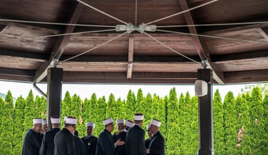
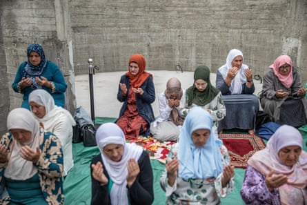
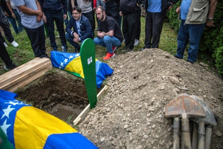
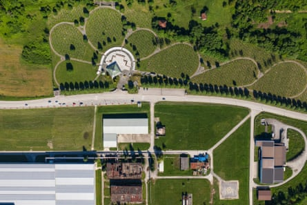
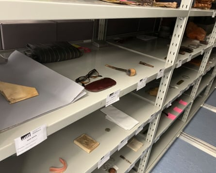
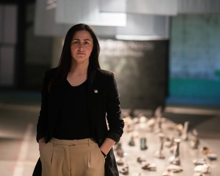
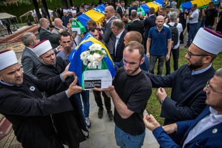
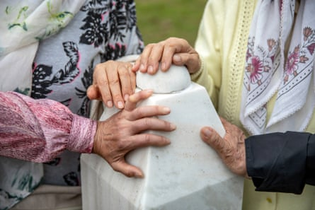
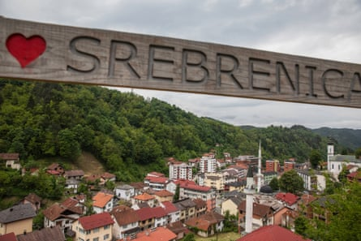

T hree decades after genocide was committed in the middle of Europe , memories in the rest of world are beginning to fade, helped along by a relentless effort by the perpetrators and their allies to cover up evidence. But the sprawling murder scene in the hills and fields around Srebrenica continues to cough up its bones.
In the town of Bratunac, 6 miles (10km) north of Srebrenica town, a group burial was performed recently of victims’ remains that had been identified over the course of the preceding year. Imams gathered from across the country to pray before a line of six coffins draped in the blue and gold Bosnian flag.
A crowd of about a thousand Bosniaks gathered in the surrounding graveyard, where a backhoe had carved out six new holes, one of them just a small trench to accommodate the body of a one-year-old, Almera Paraganlija, killed alongside her mother, Zineta, by Bosnian Serb gunmen when they rampaged through the village of Joševa.
Bosnian Muslims gather for a funeral in Bratunac of six people killed.Photograph: Damir Šagolj/The Guardian
Hajrudin Paraganlija, husband to Zineta and father to Almera, stood at the graveside to see them buried finally, more than 30 years after he last held them in his arms.
“It is a kind of peace to at least know where they are,” he said, though his sunken cheeks and unfocused stare did not look like those of a man at peace; rather one hollowed out by grief. His mother and brother’s bodies have yet to be found.
He lingered by the graves before following the rest of the crowd down a narrow road that leads from the Muslim cemetery to Bratunac’s main road. Serb police kept the traffic moving but otherwise there was no interaction with the mourners as they boarded buses to leave town. Local Serbs went about their business without making eye contact. It was as if the mourners, having buried their dead, had themselves become invisible as ghosts.
Most of the Serb population came to Bratunac from elsewhere in Bosnia after the town’s Muslim population was killed or driven out. Many of them occupy the homes of the dead. The genocide is not a subject of conversation, though the town and the whole valley leading up to Srebrenica has an infamous place in the history books.
More than 8,000 men and boys (almost all Bosniaks – Bosnian Muslims) were killed here within a few days following 11 July 1995, when Bosnian Serb forces seized control of the area, supposedly a UN-protected haven. Many thousands of Bosniaks had been murdered over the preceding three years of war in this part of the north-eastern corner of the country, but the scale and speed of the Srebrenica slaughter finally shocked the world into decisive action to end the conflict.
Women pray at the collective funeral for those whose remains have finally been identified.Photograph: Damir Šagolj/The Guardian
Bratunac and Srebrenica now lie within the boundary of a Bosnian Serb statelet, Republika Srpska, created by the Dayton peace agreement , which ended the war in November 1995. The Republika Srpska runs the local police and flies Serb flags across the region. Its leaders do not just deny the genocide, they glorify the killers.
“The complete silence that came after the war has evolved into literally celebrating genocide,” said Hariz Halilovich, a Srebrenica-born author, anthropologist and professor at the Royal Melbourne Institute of Technology. “And it’s not some kind of isolated hate speech that happens here and there. It has gradually become completely mainstream.”
Last year, Halilovich published a study of all the popular Serb songs that celebrate the genocide. One calls for the Srebrenica massacre to be “three times repeated” and includes the couplet: “Sleep peacefully, Fato, everyone of yours has been slaughtered / Only Mujo is not, he is hanging by the gate”, using diminutives of common Muslim names to taunt the survivors.
Almera Paraganlija, an infant killed in 1992, is buried at the memorial centre.Photograph: Damir Šagolj/The Guardian
“What is shocking is how these triumphalist songs are performed at christenings, weddings and birthday parties – not at some remote, closed off place by hardcore nationalists,” Halilovich said.
The Bosnian Serb leader, Milorad Dodik, has called the genocide an “arranged tragedy”, claiming that many of the dead were in reality still alive.
At the Bratunac funerals in May, the survivor who gave the oration focused on the environment of denial as an existential threat, a potential second genocide.
“The voices of our dead have not faded away. They are still with us, and they are asking us not to stay silent while the crime of denial is everywhere in institutions around us,” she said.
The speaker was Almasa Salihović, whose elder brother Abdulah was killed in the 1995 Srebrenica atrocities. The family have had to bury him twice, as different parts of his body have been found.
The Srebrenica Memorial Centre, where thousands of Bosniaks killed in the genocide are buried.Photograph: Damir Šagolj/The Guardian
Some of the exhibits at the Srebrenica Memorial Centre.Photograph: Julian Borger/The Guardian
In their initial effort to cover up the 1995 genocide, Serb forces dug up one set of mass graves and moved the remains to others. They did it in a hurry with hulking mechanical diggers that cut through bodies and jumbled up the bones, making the process of finding and identifying victims endlessly complex and agonising.
Mass killings came to this north-eastern corner of Bosnia in two main waves. The first was in 1992 in the form of a rapid series of coordinated surprise attacks on Muslim villages and towns, as the dictator in Belgrade, Slobodan Milošević, tried to carve out a Greater Serbia. The Paraganlija family, buried 33 years later in Bratunac, were among the victims.
The survivors of those massacres took shelter in Srebrenica, an old silver-mining town, which was declared a UN-protected “safe area” in April 1993.
Almasa Salihović was six when her family walked through forests at night to reach Srebrenica.
Almasa Salihović, whose elder brother Abdulah was killed in the 1995 Srebrenica atrocities.Photograph: Handout
“I remember my sister pulling me along because you had to go uphill a lot so my arms were hurting so much,” she said. What she recalls most of the two years under the watch of blue-helmeted UN peacekeepers was the hunger. The area was surrounded by Serb forces and food arrived erratically, mostly by airdrop.
At 3am on 6 July 1995, the second wave of killings arrived. The illusion of UN protection crumbled when the Bosnian Serb army under Gen Ratko Mladić began an attack on the Srebrenica “safe area”. The Dutch UN battalion guarding the zone gave up its outposts in the face of the offensive, while many of the Muslim men of the area fled into the woods. The civilians left behind in the outlying villages fled to Srebrenica town and ultimately to the Dutch UN headquarters, a battery factory in a place called Potočari, farther north on the road to Bratunac.
Almasa’s elder brother and sister, Abdulah and Fatima, managed to cling to the side of UN trucks as they withdrew to Potočari. They were among the local population allowed inside. Almasa, her mother and her other two siblings followed by foot. By the time they arrived late on 11 July, the gates of the battery factory were closed and they had to camp outside.
The coffins of the six latest victims to be identified are carried at their long-awaited funeral.Photograph: Damir Šagolj/The Guardian
Serb forces took control of Potočari the next day, walking through the crowd, pulling away for interrogation men and teenage boys who never returned. Women, young children and elderly people were put on buses to territory controlled by the Bosnian army.
On Thursday 13 July, it was the turn of those inside the battery factory. The Serbs ordered them to walk out in pairs, and the Dutch soldiers gave them up and allowed them to be seized. Abdulah and Fatima walked out together, but 18-year-old Abdulah was grabbed and made to stand with other men and boys. He was later killed in one of the execution sites near the border town of Zvornik.
The battery factory at Potočari is now the Srebrenica Memorial Centre, where artefacts have been placed in cavernous halls, next to the carcasses of socialist-era heavy machinery. Traces of the Dutch peacekeeper presence have been preserved including vicious graffiti about Bosnian girls left by soldiers who were supposed to protect them.
Occasionally, Dutch veterans revisit the site of one of the most shameful chapters in their country’s military history. One recently pointed out a macabre remnant that had not been noticed before: ropes on an elevated level of one of the factory halls, with which some local girls had tried to hang themselves rather than surrender themselves to the waiting Serbs.
Survivors and relatives touch the grave of their loved one.Photograph: Damir Šagolj/The Guardian
The Srebrenica Memorial Centre stands like a small rocky island in a sea of denials, constantly buffeted by hostile waves. It was forced to close down in March after Dodik threatened to drive out Bosnian state authorities and force through secession.
The centre reopened after the immediate threat of a coup passed, but in the surrounding area, evidence of the genocide is being rubbed away. One of the execution sites, an old agricultural warehouse in Kravica , has been refurbished, the pockmarks from the machine guns plastered over. It is now inaccessible behind locked gates, and a chained dog barks at anyone who tries to approach.
Last October, there was even an attempt to erase the centre’s existence online, when it was identified on Google Maps as “ Ratko Mladić Park ” for several days before the hack was discovered.
In such a hostile environment, the act of remembrance is a struggle. DNA analysis has been used on an unprecedented scale, identifying each body part as it is found.
In an expanded exhibit covering 4,300 sq metres in preparation to mark the 30th anniversary of the genocide on 11 July, the focus is on the personal effects unearthed among the bones, and the stories they tell about the dead.
Srebrenica now lies within Republika Srpska.Photograph: Damir Šagolj/The Guardian
A watch, a belt, a pair of glasses, a notebook, a favourite football shirt and an identity card are some of the glass-case exhibits, each suspended from wires in front of white curtain imprinted with images of their owners. In a next-door room video screens show surviving relatives explain the significance of each object and what it says about their murdered loved one.
In Abdulah Salihović’s case, the chosen object is a still from a video of him as a schoolboy, giving a presentation to his class. The linked testimony is from his sister Fatima, who walked with him out of the battery factory on that day in July 1995, which they both knew would be the last time they would see each other. At the very last moment of that, she could no longer bear the strain.
“I walked with him all the time, and then asked my friend Nihada … to walk with him behind me. I would walk in front,” she says in the recorded testimony , forced out through sobs. “I’ll never forgive myself for doing that.”
In another hall of exhibits, there is a long parade of battered shoes which belonged to the thousands of men and boys who tried to escape through the forest in July 1995 and who were mowed down in ambushes.
Their footwear and other personal effects have been collected meticulously by the Srebrenica Memorial Centre’s curators, walking through the woods and fields repeatedly with metal detectors and GPS equipment.
“It’s a struggle to get these things,” Emir Suljagić, the centre’s manager, said, pointing out that many of the objects were evidence in investigations of the many crimes that constituted the overall genocide.
“These artefacts, in some cases, are probably the only physical proof of someone’s existence,” Suljagić said. “They speak for life, they speak for death, they speak for everything in between. The moment that we put them on display in the memorial, they tell a whole silent history.”